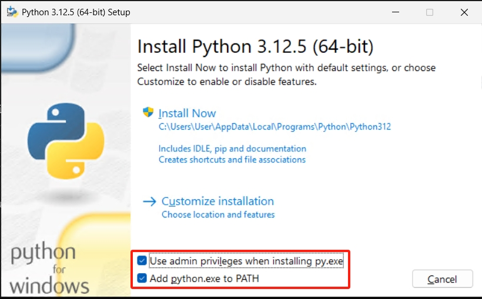
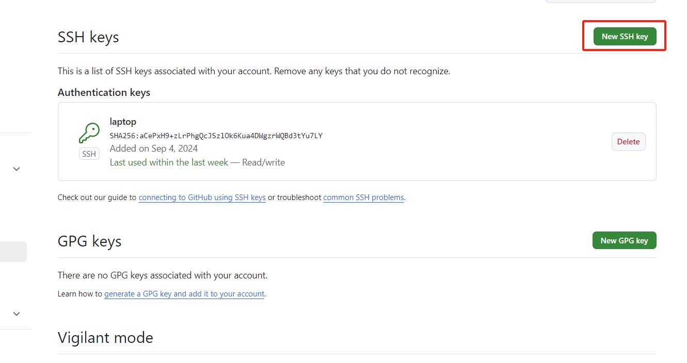
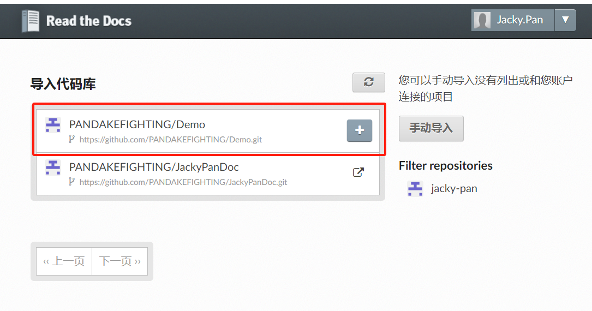
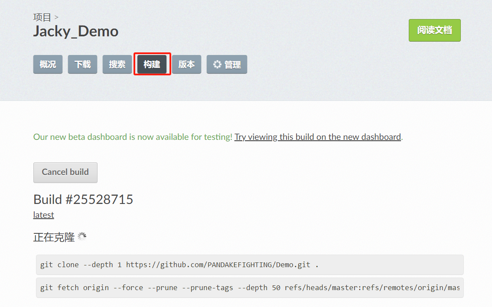

Sphinx+Github+Readthedocs
前置环境装备：Python(pip)、Git、Github账户、ReadTheDocs账户
系统：Windows 11
Python
安装略
[^注意]: 安装需要注意勾选“Add python.exe to PATH”

Git
网址：https://git-scm.com/
安装略,没太多要求直接下一步到位。
Github
网址：https://github.com/
账户注册略
Readthedocs
网址：https://readthedocs.io/ 或 https://app.readthedocs.org/
账号注册略
Sphinx 及Sphinx组件安装
创建本地文档目录（也是Git根目录）
创建文件夹目录名为Demo，也作为本地仓库的根目录
安装完成Python会附带安装pip工具安装如下组件
pip install -U sphinx sphinx_rtd_theme sphinx-autobuild recommonmark sphinx_markdown_tables
sphinx初始化
sphinx-quickstart
C:\Users\User\Desktop\Demo>sphinx-quickstart
Welcome to the Sphinx 7.4.7 quickstart utility.
Please enter values for the following settings (just press Enter to
accept a default value, if one is given in brackets).
Selected root path: .
You have two options for placing the build directory for Sphinx output.
Either, you use a directory "_build" within the root path, or you separate
"source" and "build" directories within the root path.
> Separate source and build directories (y/n) [n]: y
The project name will occur in several places in the built documentation.
> Project name: Demo
> Author name(s): Jacky
> Project release []: v1.0
If the documents are to be written in a language other than English,
you can select a language here by its language code. Sphinx will then
translate text that it generates into that language.
For a list of supported codes, see
https://www.sphinx-doc.org/en/master/usage/configuration.html#confval-language.
> Project language [en]: zh_CN
Creating file C:\Users\User\Desktop\Demo\source\conf.py.
Creating file C:\Users\User\Desktop\Demo\source\index.rst.
Creating file C:\Users\User\Desktop\Demo\Makefile.
Creating file C:\Users\User\Desktop\Demo\make.bat.
Finished: An initial directory structure has been created.
You should now populate your master file C:\Users\User\Desktop\Demo\source\index.rst and create other documentation
source files. Use the Makefile to build the docs, like so:
make builder
where "builder" is one of the supported builders, e.g. html, latex or linkcheck.
编译生成HTML和静态文件
make html
C:\Users\User\Desktop\Demo>make html
Running Sphinx v7.4.7
loading translations [zh_CN]... done
making output directory... done
building [mo]: targets for 0 po files that are out of date
writing output...
building [html]: targets for 1 source files that are out of date
updating environment: [new config] 1 added, 0 changed, 0 removed
reading sources... [100%] index
looking for now-outdated files... none found
pickling environment... done
checking consistency... done
preparing documents... done
copying assets...
copying static files... done
copying extra files... done
copying assets: done
writing output... [100%] index
generating indices... genindex done
writing additional pages... search done
dumping search index in Chinese (code: zh)... done
dumping object inventory... done
build succeeded.
The HTML pages are in build\html.
本地编译部署测试
sphinx-autobuild source build/html
C:\Users\User\Desktop\Demo>sphinx-autobuild source build/html
[sphinx-autobuild] Starting initial build
[sphinx-autobuild] > sphinx-build source build/html
Running Sphinx v7.4.7
loading translations [zh_CN]... done
building [mo]: targets for 0 po files that are out of date
writing output...
building [html]: targets for 1 source files that are out of date
updating environment: [new config] 1 added, 0 changed, 0 removed
reading sources... [100%] index
looking for now-outdated files... none found
pickling environment... done
checking consistency... done
preparing documents... done
copying assets...
copying static files... done
copying extra files... done
copying assets: done
writing output... [100%] index
generating indices... genindex done
writing additional pages... search done
dumping search index in Chinese (code: zh)... done
dumping object inventory... done
build succeeded.
The HTML pages are in build\html.
[sphinx-autobuild] Serving on http://127.0.0.1:8000
[sphinx-autobuild] Waiting to detect changes...
修改conf.py文件
配置Sphinx主题
html_logo = '_static/logo.png' ---修改顶部logo
html_last_updated_fmt = '%b %d, %Y'
html_domain_indices = True
配置index.rst文档
Welcome to JACKYDOCS.
=======================
Add your content using ``reStructuredText`` syntax. See the
`reStructuredText <https://www.sphinx-doc.org/en/master/usage/restructuredtext/index.html>`_
documentation for details.
.. toctree::
:maxdepth: 2
:caption: DOCS:
markdown.md
markdown1.md
Sphinx+Github+Readthedocs.md
配置支持Markdown插件
配置recommonmark插件
配置支持markdown表格插件
Sphinx 相关安装报错：
# Configuration file for the Sphinx documentation builder.
#
# For the full list of built-in configuration values, see the documentation:
# https://www.sphinx-doc.org/en/master/usage/configuration.html
# -- Project information -----------------------------------------------------
# https://www.sphinx-doc.org/en/master/usage/configuration.html#project-information
project = 'Demo'
copyright = '2024, Jacky'
author = 'Jacky'
release = 'v1.0'
# -- General configuration ---------------------------------------------------
# https://www.sphinx-doc.org/en/master/usage/configuration.html#general-configuration
extensions = []
templates_path = ['_templates']
exclude_patterns = []
language = 'zh_CN'
# -- Options for HTML output -------------------------------------------------
# https://www.sphinx-doc.org/en/master/usage/configuration.html#options-for-html-output
#html_theme = 'alabaster' ---注释该行
html_static_path = ['_static']
html_theme = "sphinx_rtd_theme" ---修改主题
extensions = ['recommonmark'] ---添扩展支持
Github及Git bash命令
配置连接github免密
要在Git中链接到GitHub，您需要设置Git的全局用户信息以及创建SSH密钥，并将SSH公钥添加到GitHub账户中。以下是步骤和示例代码：
设置Git的全局用户信息：
git config --global user.name "Jacky"
git config --global user.email "dake323@126.com"
创建SSH密钥对（如果已有，可以跳过这一步）：
ssh-keygen -t rsa -b 4096 -C "dake323@126.com"
将SSH公钥添加到GitHub账户：
首先，复制SSH公钥到剪贴板：
cat ~/.ssh/id_rsa.pub | clip #linux
C:\Users\User\.ssh #windows,打开id_rsa.pub复制SSH公钥到剪贴板
或者在Linux/Mac中：
cat ~/.ssh/id_rsa.pub | xclip -selection clipboard
然后，登录GitHub，在设置（Settings）中找到SSH和GPG密钥（SSH and GPG keys），点击“New SSH key”，粘贴你的SSH公钥进去，保存即可。

测试SSH连接：
ssh -T git@github.com
克隆GitHub仓库或者添加远程仓库到现有的本地仓库：
git clone git@github.com:your_username/your_repository.git
# 或者，如果你已经有了本地仓库
git remote add origin git@github.com:PANDAKEFIGHTING/Demo.git
完成以上步骤后，你的本地Git环境就与GitHub账户链接起来了，可以开始使用Git进行版本控制和与GitHub互动。
git初始化和提交上传
git init
git commit -m "commit log"
git branch -M master
git push -u origin master
Github及Git bash命令报错：
Readthedocs构建
构建导入的项目代码库
选择需要的代码库：
需要


Readthedocs构建报错：
ERROR1:
Requirement already satisfied: sphinx in /home/docs/checkouts/readthedocs.org/user_builds/jacky-demo/envs/latest/lib/python3.12/site-packages (from -r requirements.txt (line 1)) (8.0.2) ERROR: Could not find a version that satisfies the requirement sphinx_rts_theme (from versions: none) ERROR: No matching distribution found for sphinx_rts_theme
解决办法：
添加如下信息到requirements.txt
sphinx==7.1.2
sphinx-rtd-theme==1.3.0rc1
recommonmark
sphinx_markdown_tables